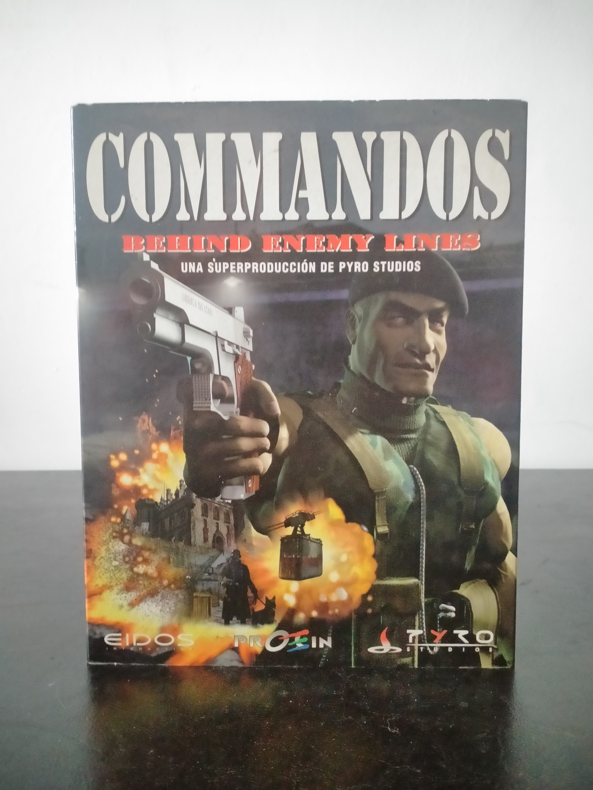

Ficha #000053
Commandos: Behind Enemy Lines
Commandos: Behind Enemy Lines es uno de los títulos más influyentes de la estrategia táctica en tiempo real de finales de los años noventa. Desarrollado por el estudio español Pyro Studios y publicado internacionalmente por Eidos Interactive, el juego sitúa al jugador al mando de un reducido grupo de especialistas aliados durante la Segunda Guerra Mundial. Su propuesta se alejaba de la estrategia clásica basada en construcción y gestión de recursos, apostando por infiltración, coordinación precisa y resolución táctica de misiones detrás de las líneas enemigas. La edición española distribuida por Proein se convirtió en uno de los mayores éxitos internacionales de la industria española del videojuego. El título destacó por su dificultad elevada, IA avanzada para la época y diseño de escenarios abiertos con múltiples rutas de resolución. Commandos fue además un referente tecnológico gracias a su motor gráfico isométrico detallado y su cuidada ambientación militar.
- Formato
- Big Box
- Plataforma
- Win95 Win98
- Género
- Estrategia en tiempo real Táctica en tiempo real Sigilo Estrategia bélica
- Serie
- Todos Big Box
- Desarrollador
- Pyro Studios
- Distribuidor
- Eidos Interactive, Proein
- EAN
- —
Contenido de la edición
- Manual
- CD-ROM
Preservación
- Protección
- Verificación de CD
- Formato recomendado
- BIN/CUE
- Jugable en virtualización
- Sí
La preservación es sencilla mediante imagen BIN/CUE del CD original. El juego suele funcionar correctamente en sistemas modernos mediante parches de compatibilidad o wrappers DirectDraw.